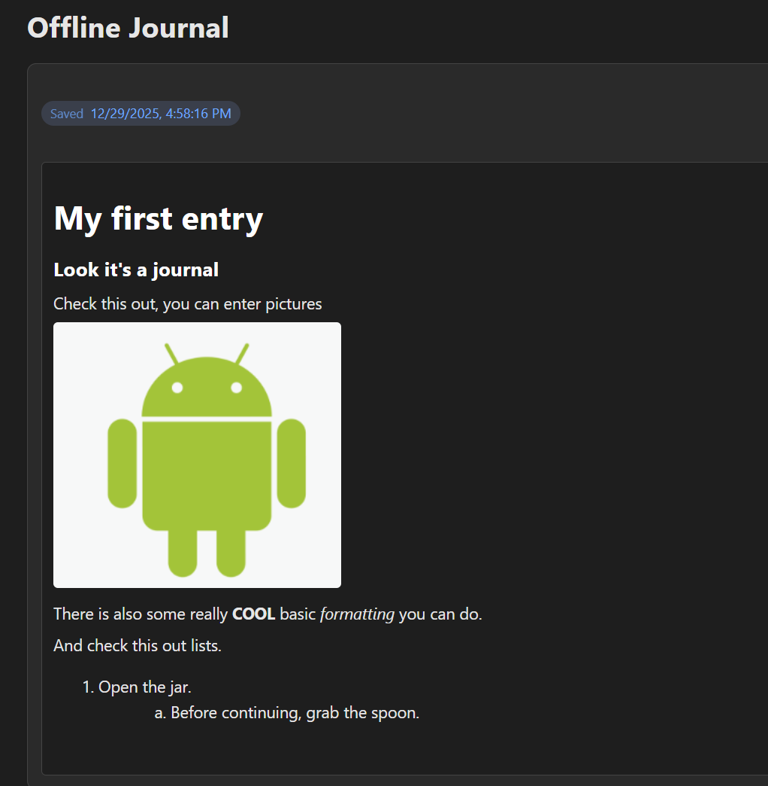
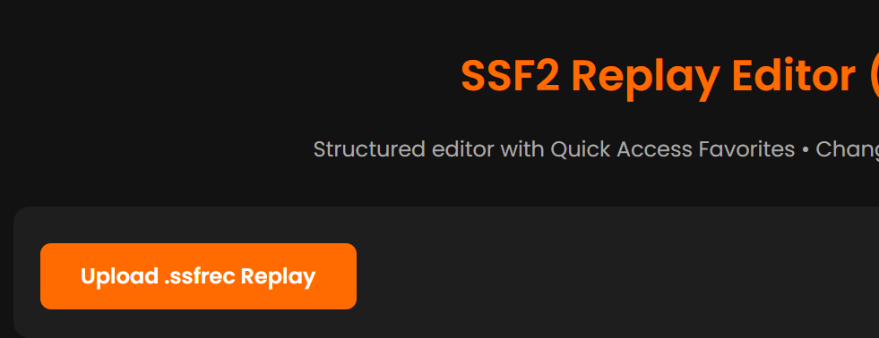
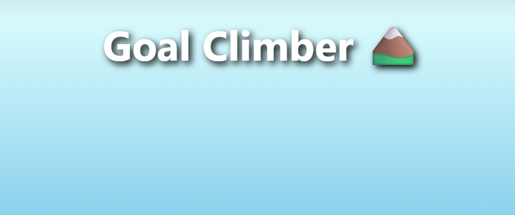
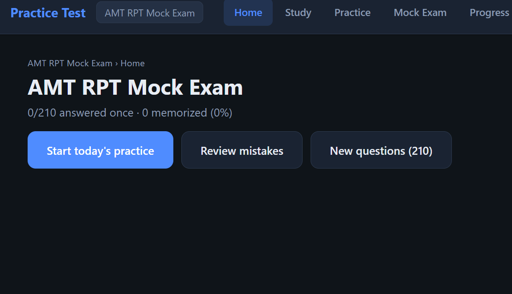
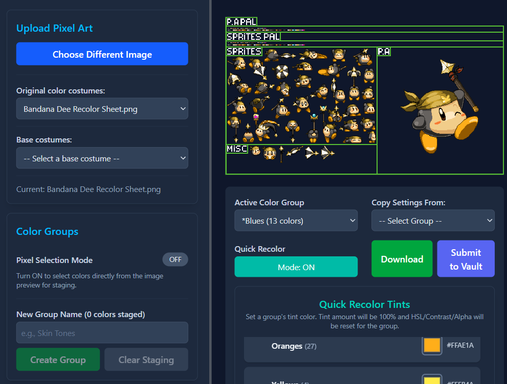
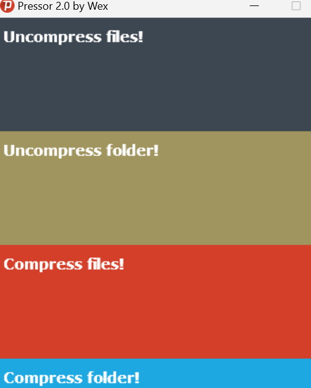

Offline Journal
A private, fully offline journaling app that works entirely in your browser. No accounts, no data leaves your device.
Open JournalPersonal tools and experiments — browser apps, creative utilities, and downloads.
Tools you can open in the browser, plus downloads and external utilities.

A private, fully offline journaling app that works entirely in your browser. No accounts, no data leaves your device.
Open Journal


Spaced repetition study app with mock exams, readiness tracking, and offline practice — runs in your browser.
Open App
A tool for recoloring pixel art images in your browser. Integrates with the Super Smash Flash 2 Color Vault discord server.
Open Tool
An application for modding Super Smash Flash 2 sprites and animations.
Download Latest Release